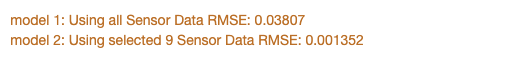

Introduction
With the rise in trends like industry 4.0 and Industrial Big Data, industries are under immense pressure to adopt these technologies. We all have heard quotes like “Digital is the main reason half of the Fortune 500 have disappeared since 2000” and many more. While there is no doubt about the potential significance of such technologies, the gap between digital ambition and transformative action has not been addressed very often.
The use of technologies like Digital twin for predictive maintenance has gained momentum in recent years. One of the most critical parts of such technologies is real-time data acquisition using sensors and operational data connected using the Industrial Internet of Things (IoT). The second step after obtaining the data is to get valuable insights and make predictions from it. This logic can be created manually or using predictive models like machine learning. While there are thousands of articles and publications out there on IIoT, very few provide any practical information. This post has been on my mind for quite some time, so here is a summary of my step-by-step approach for designing a digital-twin-ready industrial IoT system for operation and maintenance using an example case-study.
Futureproofing for digital twin: In part 2 of the article, I will discuss how this IoT system will serve as a foundation for a dynamic Digital Twin model. But before we even think about a working Digital twin, we need to perfect our industrial IoT system.
Framework
A perfect industrial IOT system must have a reasonable number of inputs/outputs and a logic that can improve upon itself over time. In this article, I am sharing a very practical framework on how to achieve that using a case study. Here are the basic steps to accomplish that.
- Step 1: Identify the goals you want to achieve from your IIOT system.
- Step 2: Analyze your system, gather available data and make a rough draft design.
- Step 3: Optimize and design IoT logic architecture.
- Step 4: Design a Prediction model.
- Step 5: Transfer learning to other equipment in the plant.
- Step 6: Capture fault evolution.
- Step 7: Calculate the remaining life of the equipment.
- Step 8: Create a what-if scenario logic for digital twin.
I’ve achieved great results following the framework on simulation and experimental data that I could find. One such study I performed in the past had experimental data, more details in this paper , where we used a Bayesian network for prediction. Using the same sensor data from the setup, I was able to make a predictive model and landed a near perfect result, only this time using simple machine learning models (which are less complicated than probabilistic models).
A case study on Naval Ship’s gas turbine propulsion system:
For part 1 of this article, I will use a publicly available dataset so that you can follow the steps along with me. The data is provided by the Center for Machine Learning and Intelligent Systems at the University of California. This is the link to the original data.
The data contains sensor readings of a simulated Naval Ship, frigate type, using Gas Turbine (GT) propulsion plant. The data is presented in vectors of 18 dimensions containing 16 sensors readings, which are shown below.
| Lever position (lp) Ship speed (v) [knots] Gas Turbine (GT) shaft torque (GTT) [kN m] GT rate of revolutions (GTn) [rpm] Gas Generator rate of revolutions (GGn) [rpm] Starboard Propeller Torque (Ts) [kN] Port Propeller Torque (Tp) [kN] Hight Pressure (HP) Turbine exit temperature (T48) [C] |
GT Compressor inlet air temperature (T1) [C] GT Compressor outlet air temperature (T2) [C] HP Turbine exit pressure (P48) [bar] GT Compressor inlet air pressure (P1) [bar] GT Compressor outlet air pressure (P2) [bar] GT exhaust gas pressure (Pexh) [bar] Turbine Injecton Control (TIC) [%] Fuel flow (mf) [kg/s] |
The top five vectors out of 11934 are shown in figure 1. Here we will use 16 sensor data to predict the Compressor decay state coefficient, the last-second variable in the column of the data frame as shown in the figure 1.
- Step 1: Identify the goals you want to achieve from your IIOT system.
First, we need to clearly define our goal, what we hope to achieve from our IIOT system. Here we will use 16 sensor data to predict the compressor's efficiency using the Compressor decay state coefficient, the last-second variable in the column of the data frame. And of course, another goal is that we want to be able to use it for digital twin's capabilities like what-if scenarios, fault identifications etc. Our goal will drive what models we use in our next steps.
- Step 2: Analyze your system, gather available data and make a rough draft design.
The data source doesn't provide any information on how the existing system looks like. From my experience of a gas-power plant, I believe the system should look somewhat similar to this.
Identify all the system's sensors and Factors that will feed our prediction model. I have assigned our potential candidates for IoT sensors in the pink circles in the schematic. I define the factors as the static parameters that are specific to the equipment, location, material type, model number etc. One thing is to note is we will not eliminate any potential sensors. We will see why in the next step. For this case study, we can generate a location as one static variable. We won't be able to use it in this case study as we only have one unique system, although it's nice to have in case we want to transfer learnings from this system to other systems in the plant. Ultimately, this will help us quickly answer questions like 'why equipment in a certain location is failing more often than another location?', or 'how the degradations like microbiologically influenced corrosion (MIC) are spreading across our plant' etc.
Consider the following questions about our potential IoT candidates before we move to the next step:
Which IoT Sensors will provide the best prediction for the Compressor efficiency?
This is an important question. You may design an accurate IoT system with hundreds of sensors but tracking them all will create a bigger maintenance problem than the one we are trying to solve. We need to know which IoT sensors are absolutely essential for accurate prediction, in rank-wise order.
Can we remove any IoT Sensor without affecting the prediction accuracy?
If accuracy is decreased marginally, is the trade-off worth it?
Are any IOT sensors effectively redundant with each other?
For example, if vibrations on a motor increase linearly with its RPM, we don’t need to measure both.
- Step 3: Design and optimize the IOT logic architecture
In this step, we will try to answer the questions using some simple machine learning tools. Although it is possible to calculate this in excel, I strongly recommend using statistical computing software like Matlab, R packages, or Python libraries.
There is no single cookie-cutter solution for all systems, so we will explore several statistical and machine learning models in this section and use whichever gives us the best result for our model. The first thing we need to do is calculate the significance of each sensor on the compressor efficiency. Basically, we need to find variance and co-variance within each of the sensor's data. You can use several methods for this; some of the popular ones are K Nearest Neighbors, Partial Least Squares, Decision tree, or probabilistic methods like Bayesian clustering. I choose to use a Decision tree since the data we have is relatively simple, and it's easy to visualize a decision tree. We won't detail what a decision tree is. A quick google search will land you dozens of great tutorials. Here is a wikipedia link to get started.
For this case study, I was able to make a decision tree of about 281 nodes. The best way to understand the results is by plotting them in the graph as we go along. Since 281 nodes are too big to put in the article, here are the top four nodes for the decision tree in figure 3. Using the same parameters, Figure 4 presents the actual distribution using a random sampling method. At each node, we are asking a question and breaking down our data into two subsets. The first one is 'compressor_outlet_temp<787?' for the condition that is false; the log of compressor efficiency is very close to –0.04. (why log? Because it helps keep data on the same scale. Do this if you are unsure about the range/distributions of your data). And similarly, if the condition is true, we ask the next question and so on.

Visualization gives us great insights that we often miss out on in our regression analysis; always lay out your data in the form of graphs, whenever possible.
Next, we want to know how a particular sensor affects the efficiency of the Compressor. We can perform a chi-squared (chi²) statistical test on this and then normalize the p-value of each sensor such that they all add to 1 (it is essential to do this so that we can compare the importance of each sensor on the same scale). Here is how the final result should look like.
In this graph, each bar represents the relative significance of each sensor on the Compressor efficiency. As we can see, Compressor_outlet_temp has the highest significance on compressor efficiency. Interestingly, the first three sensors have almost no effect on the compressor’s efficiency (less than 0.001 relative significance). We don’t need those sensors for prediction, so we will remove these three sensors from our IoT architecture. This is how it would look like if we remove those three sensors from our IoT architecture.
Almost the same. So we can proceed.
Next, we calculate the correlation between each of the sensors. We can do this in many ways: one way is by using regression analysis for each sensor readings to calculate the coefficient of determination, also called R2. The most similar pairs of sensors are found by calculating the rank correlation, which means that all the values are replaced with their rank (i.e., first, second, third, etc. ), and then the correlation is calculated. We can also combine this with decision tree regression analysis to visualize the similar pairs of our IoT sensor candidates. This is shown in the plot: figure 7.
Interestingly, the pair of { starboard propeller torque and portside propeller torque}, {lever position and ship speed}, {fuel flow and hp turbine temperature} both are merged far from the root in our decision tree regression. Meaning they are so highly correlated that they are practically the same. This makes sense if you think about it; the lever position directly governs the speed, both propellers are probably driven by a same power-train, hence the differential torque is same and so on. Hence, we can say that they are redundant. We will remove one from each redundant pairs: Portside propeller torque, ship speed, hp turbine temperature.
Outlier sensor data: Sometimes, you may come across a sensor in your system that gives random data. Instead of helping with prediction, these sensor’s data create un-necessary complications or noise in your data. We should try to identify this before we design our prediction model. We can use a simple technique called one-class classification (OCC). It involves fitting a model on the distributed data and predicting whether new data is normal or an outlier/anomaly. Performing OCC analysis on all sensor data individually, it was found that turbine injection control sensor data had some anomalies. However, use some practical judgement before eliminating the sensor from IoT architecture.
Ok, let us summarize: we started with 16 sensors, we found three of them had no effect at all on the compressor efficiency. Pairs of three sensors were redundant, and one sensor had many anomalies that probably won’t contribute positively to data prediction. We can remove these seven sensors from our IoT architecture.
So out of 16 sensors, we have selected only nine sensors for our IoT architecture. We also have detailed information on how each sensor will contribute to our prediction goal. We are now ready to create a prediction model.
- Step 4. Make a prediction model.
We have nine sensors to detect compressor efficiency with 11934 unique data instances. Since we have moderate size data, we can use one of many available deep learning algorithms to solve this. I am using a simple neural network model with two hidden layers for this step. There are better techniques out there, which I am not discussing here; I recommend exploring and try them out.
Results
For this case study, I spit the data into 80-20% for training and testing, respectively. For calculating the accuracy of prediction, I used a simple root mean squared error as our accuracy metric.
After a couple of pass-through training data, the model was able to make predictions with a root mean squared error of 0.00135 . In other words, the prediction was roughly about 0.14% off from the actual value on average.
Curious about what the accuracy would be if we use all of the sensors?
Here is a summary of the comparison of two models; one with nine sensors that we shortlisted for our IoT system and another with all sensors. Both are using the same neural network parameters.
We achieved about 28 times better prediction using almost half the number of sensors we originally identified for our IoT system. We may achieve nearly the same accuracy using all sensors by trying out more advanced deep learning models. But the point here is: we don’t need to.
Conclusion
We designed a perfect industrial IOT system and the logic to predict the compressor efficiency with a high accuracy leveraging simple statistical/machine learning tools. Moreover, by optimizing inputs and removing the redundant sensors, our IoT system is now lean, simple and easily manageable. We also know which sensors are essential for accurate prediction and which ones we can safely ignore temporarily without losing prediction accuracy if they close to failure.
In part 2 of this article, I will continue with the remaining steps and will talk about how we can perform fault evolution analysis, calculating useful life and create scenario simulation logic for digital twin.